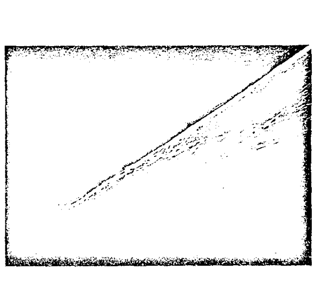
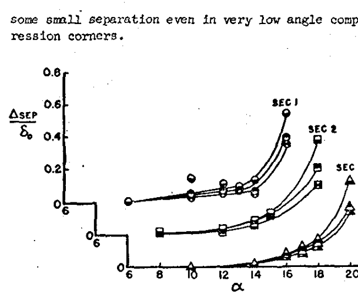
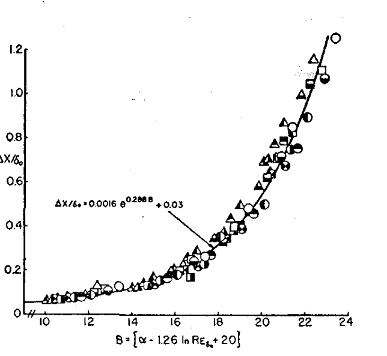
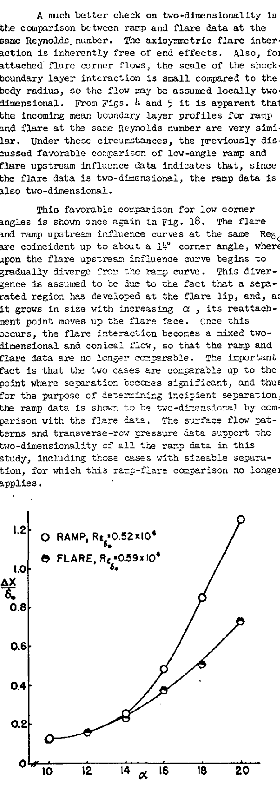

01中文摘要
在 M=2.9、10⁵<Re_δ0<10⁷（Re_x 至 10⁹）范围内，用二维压缩拐角和轴对称锥裙研究激波与可压缩湍流边界层的干扰。对多个拐角角取得详细的表面压力、纹影和油流显示数据；通过拐角与锥裙结果对比验证压缩拐角流动的二维性。主要发现是初始分离是渐变而非突变现象：初始分离拐角角落在约 16°–18° 的带内，并在所研究范围内基本与雷诺数无关。
02阅读说明
文章类型：实验研究（AIAA Paper 75-7，1975；M≈2.9 超声速湍流边界层压缩拐角与锥形襟翼初始分离）。材料范围：bundle 共 1025 行，已读至 EOF（PDF p.1-16）；另用 PDF p.5、p.8、p.9、p.10 核对 Cole 壁面-尾流律、Fig. 12、Fig. 17 的指数塌缩式与 Fig. 18。图表可读性：扫描 OCR 质量差，公式与部分图内数值有乱码；Table I 与 Table II 已按 PDF p.4 核对，Fig. 17 拟合式与 Fig. 12/18 可读。信息完整度：中高——18 个斜坡工况与 4 个襟翼压力工况的 δ0、θ0、Reθ、Cf0 以及分离距离、上游影响均有数据；但没有不确定度预算，部分初始分离判据带主观性。提取口径：以正文明确陈述与可读图表为主；OCR 不清处标注“受限于材料，无法确认”，不猜测数值。 文章类型：期刊
03一句话核心与三句话摘要
M=2.9、Reθ≈10^5–10^6 的压缩拐角/锥形襟翼实验表明，初始分离是渐变过程，α_i≈15–18° 且与 Re 无关。
- 问题与缺口：湍流边界层初始分离对高速飞行器与叶轮机械设计重要，但既有研究对 M≈3 的初始分离角水平及其随 Re 的变化存在分歧：Kuehn 报告随 Reθ 增大而减小，Roshko–Thomke 与 Law 报告高 Re 反转，Settles–Bogdonoff 报告无 Re 效应，Spaid–Frishett 质疑低 Re 判据。 原文明确
- 方法与工况：在 Princeton 8×8 高 Re 超声速风洞（M≈2.9、pt=50–500 psia、三段可交叉 Re）中，用 10–20° 斜坡与 10–20° 锥形襟翼，配合 47 孔静压、边界层耙、纹影/阴影和煤油-石墨油流，覆盖 Re_x=0.1×10^8–9×10^8，并以多种判据综合确定初始分离。 AI概括
- 结论：初始分离是渐变而非突变现象，α_i 落在约 15–18° 的带内且在本 Re 范围内与 Re 无关；Re 升高只使上游影响与分离距离减小，不能据此推断 α_i 升高；把上游影响或分离长度外推到零不是有效的初始分离判据，基于摩阻的关联式与无黏模型均不能预测本文结果。 AI概括
04核心内容清单
| 要点 | 类型 | 重要性 | 原文依据 | 属性 |
|---|---|---|---|---|
| Princeton 8×8 高 Re 风洞可在三个下游位置安装模型，通过大 x 小 pt 或小 x 大 pt 交叉 Re，Re_x 覆盖 0.1×10^8–9×10^8，从而把 Re 效应与模型尺度/压力效应部分解耦。 | 实验设施 | A | PDF p.3（论文 p.2） | 原文明确 |
| 18 个斜坡工况的边界层参数完整：M=2.84–2.95，δ0=0.416–1.185 in，θ0=0.017–0.065 in，Reθ≈0.27×10^5–7.64×10^5，Cf0=0.00090–0.00164；Van Driest 变换后与 Cole 壁面-尾流律吻合，边界层为平衡湍流。 | 来流边界层 | A | PDF p.4（论文 p.3），Table I；PDF p.5-6（论文 p.4-5），Figs. 4-5 | 原文明确 |
| 无论是否分离，压力都在拐角前开始上升；ΔX/δ0 随 Re 增大而减小，α≤20° 时上游影响处处小于 2δ0、通常小于 1δ0。 | 上游影响 | A | PDF p.8-9（论文 p.7-8），Figs. 13-16 | 原文明确 |
| 上游影响随拐角角近似指数增长，并可塌缩为 ΔX/δ0=0.006e^{0.298B}+0.03，B=α−1.26 ln Reθ+20；三个风洞段与斜坡/襟翼数据在低角下重合。 | 标度/塌缩 | A | PDF p.9-10（论文 p.8-9），Figs. 15-17 | 原文明确 |
| 分离距离随拐角角增大，16–18° 后急剧上翘；20° 时 Δx_sep/δ0 约为 0.45–0.72（随风洞段变化）；10° 低角仍存在约 1 mm 量级的小分离区，分离线基本平直。 | 分离尺度 | A | PDF p.7-8（论文 p.6-7），Figs. 11-12 | 原文明确 |
| 18° 斜坡出现双重激波：远离壁面的主激波与靠近拐角的分离激波；低角附着流无分离激波，分离激波随 α 增大逐渐出现，按激波角判据 α_i=16–18°。 | 激波结构 | A | PDF p.7（论文 p.6），Fig. 10；PDF p.12（论文 p.11），Fig. 20 | 原文明确 |
| kink 判据：拐角静压分布斜率随 α 先增后减，平台/再附斜率出现标志 kink；该判据给出 α_i=15–16°，无 Re 变化。 | 压力判据 | A | PDF p.11-12（论文 p.10-11），Figs. 21-22 | 原文明确 |
| 斜坡与轴对称襟翼的上游影响曲线在同一 Re 下重合到约 14°，随后因襟翼唇口分离而偏离；重合段证明低角斜坡交互是二维的，偏离段约 14–18° 可标记分离显著化。 | 二维性/判据 | A | PDF p.9-10（论文 p.8-9），Figs. 18-19 | 原文明确 |
| 综合多种判据，初始分离角落在约 15–18° 的带内（kink 15–16°、激波与分离长度 16–18°、斜坡-襟翼偏离 14–18°），并在 Re_x=0.1×10^8–9×10^8 内与 Re 无关。 | 核心结论 | A | PDF p.12-14（论文 p.11-13），Fig. 23 | 原文明确 |
| Re 升高使上游影响与分离距离减小，但不能据此推断 α_i 升高；把上游影响或分离长度外推到零不是有效的初始分离判据。 | 方法学 | A | PDF p.13-15（论文 p.12-14） | 原文明确 |
| 基于 Cf 的关联式（Roshko–Thomke、Watson、Elfstrom、Holden 等）预测 α_i 随 Re 持续下降；Elfstrom 无黏旋转流模型预测 α_i 随 Re 上升；两者都不能解释本文的 Re 无关性。 | 模型比较 | A | PDF p.14-15（论文 p.13-14），Fig. 24 | 原文明确 |
| 实用定义：传统“壁面剪应力局部消失且下游为正”的初始分离定义在工程上不可操作，改用“分离开始显著、开始偏离附着流”的判据。 | 定义修订 | B | PDF p.10-11（论文 p.9-10） | 原文明确 |
05引言：研究问题与领域缺口
【原文明确】湍流边界层初始分离长期是高速飞行器、叶轮机械等设计中的关键问题；由于强逆压梯度下缺乏可靠的湍流边界层理论，研究主要采用实验近似（PDF p.2，论文 p.1）。早期 Bogdonoff、Chapman、Kuehn 等工作提供了分离的一般认识与初始分离条件，但留下一个核心问题：初始分离所需条件如何随 Re 变化；把 Kuehn 结果外推到飞行 Re 的需要，促使近期风洞达到飞行 Re_x（PDF p.2，论文 p.1）。【原文明确】在 M≈3 的初始分离角上存在明显分歧：Kuehn 发现 α_i 随 Re_θ 增大而减小；Roshko–Thomke 与 Law 报告更高 Re 下趋势反转；Settles–Bogdonoff 发现无 Re 效应；Spaid–Frishett 质疑低 Re 下已建立的初始分离条件（PDF p.3，论文 p.2）。作者认为部分分歧可追溯到不同实验判据，因此本文用能“交叉”Re 的设施、覆盖宽 Re 范围、以小于边界层厚度的空间分辨率获取详细数据，并统一比较多种初始分离判据（PDF p.3，论文 p.2）。
06流动条件与几何构型
| 项目 | 数值/描述 | 依据 | 备注 |
|---|---|---|---|
| 风洞与 Re 覆盖 | Princeton 8×8 高 Re 超声速风洞；吹除式；M≈2.9；pt=50–500 psia；三个可互换等截面段；Re_x=0.1×10^8–9×10^8；总温接近环境温度 | PDF p.3（论文 p.2） | 通过模型位置与 pt 组合交叉 Re；三段 Re 重叠 |
| 斜坡几何 | 黄铜模型；宽 6 in；两侧各 1 in 旁通侧壁边界层并加侧挡板；约 47 个 0.032 in 静压孔；拐角附近最密；横向测压排与热电偶 | PDF p.3-4（论文 p.2-3） | 模型宽度与挡板用于抑制侧壁干扰 |
| 斜坡角 10° | α=10°；M=2.95/2.89/2.84（三段）；pt=60–500 psia；近绝热壁 | PDF p.3-4（论文 p.2-3） | 最低角；油流仍见约 1 mm 小分离区 |
| 斜坡角 14° | α=14°；M=2.95/2.89/2.84（三段）；pt=60–500 psia；近绝热壁 | PDF p.3-4（论文 p.2-3） | 用于油流、上游影响与斜坡-襟翼对比 |
| 斜坡角 16° | α=16°；M=2.95/2.89/2.84（三段）；pt=60–500 psia；近绝热壁 | PDF p.3-4（论文 p.2-3） | 分离距离曲线开始急剧上翘 |
| 斜坡角 18° | α=18°；M=2.95/2.89/2.84（三段）；pt=60–500 psia；近绝热壁 | PDF p.3-4（论文 p.2-3） | 阴影图显示主激波+分离激波双重结构 |
| 斜坡角 20° | α=20°；M=2.95/2.89/2.84（三段）；pt=60–500 psia；近绝热壁 | PDF p.3-4（论文 p.2-3） | 上游影响与分离距离最大 |
| Section 1，pt=60 psia | M=2.95；δ0=0.520 in；δ*=0.131 in；θ0=0.023 in；Reθ=0.52×10^5；Re/in=1.00×10^6；Cf0=0.00140 | PDF p.4（论文 p.3），Table I | Reθ 表头为 Reθ×10^-5，本记录已换算 |
| Section 1，pt=100 psia | M=2.95；δ0=0.490 in；δ*=0.129 in；θ0=0.023 in；Reθ=0.78×10^5；Re/in=1.60×10^6；Cf0=0.00129 | PDF p.4（论文 p.3），Table I | Reθ 已换算 |
| Section 1，pt=200 psia | M=2.95；δ0=0.463 in；δ*、θ0 表中未列；Reθ=1.46×10^5；Re/in=3.20×10^6；Cf0 表中未列 | PDF p.4（论文 p.3），Table I | Reθ 已换算 |
| Section 1，pt=300 psia | M=2.95；δ0=0.440 in；δ*=0.104 in；θ0=0.018 in；Reθ=2.07×10^5；Re/in=4.75×10^6；Cf0=0.00110 | PDF p.4（论文 p.3），Table I | Reθ 已换算 |
| Section 1，pt=400 psia | M=2.95；δ0=0.429 in；δ*、θ0 表中未列；Reθ=2.68×10^5；Re/in=6.30×10^6；Cf0 表中未列 | PDF p.4（论文 p.3），Table I | Reθ 已换算 |
| Section 1，pt=500 psia | M=2.95；δ0=0.416 in；δ*=0.098 in；θ0=0.017 in；Reθ=3.25×10^5；Re/in=7.90×10^6；Cf0=0.00102 | PDF p.4（论文 p.3），Table I | Reθ 已换算 |
| Section 2，pt=60 psia | M=2.89；δ0=0.870 in；δ*=0.242 in；θ0=0.043 in；Reθ=0.27×10^5；Re/in=1.00×10^6；Cf0=0.00126 | PDF p.4（论文 p.3），Table I | Reθ 已换算 |
| Section 2，pt=100 psia | M=2.89；δ0=0.830 in；δ*=0.243 in；θ0=0.042 in；Reθ=1.33×10^5；Re/in=1.60×10^6；Cf0=0.00115 | PDF p.4（论文 p.3），Table I | Table I 原值；该点与相邻 Reθ 的趋势不完全线性 |
| Section 2，pt=200 psia | M=2.89；δ0=0.781 in；δ*、θ0 表中未列；Reθ=2.46×10^5；Re/in=3.20×10^6；Cf0 表中未列 | PDF p.4（论文 p.3），Table I | Reθ 已换算 |
| Section 2，pt=300 psia | M=2.89；δ0=0.740 in；δ*=0.195 in；θ0=0.035 in；Reθ=3.48×10^5；Re/in=4.75×10^6；Cf0=0.00099 | PDF p.4（论文 p.3），Table I | Reθ 已换算 |
| Section 2，pt=400 psia | M=2.89；δ0=0.718 in；δ*、θ0 表中未列；Reθ=4.49×10^5；Re/in=6.10×10^6；Cf0 表中未列 | PDF p.4（论文 p.3），Table I | Reθ 已换算 |
| Section 2，pt=500 psia | M=2.89；δ0=0.698 in；δ*=0.183 in；θ0=0.032 in；Reθ=5.14×10^5；Re/in=7.90×10^6；Cf0=0.00092 | PDF p.4（论文 p.3），Table I | Reθ 已换算 |
| Section 3，pt=60 psia | M=2.84；δ0=1.185 in；δ*=0.343 in；θ0=0.065 in；Reθ=1.19×10^5；Re/in=1.08×10^6；Cf0=0.00117 | PDF p.4（论文 p.3），Table I | Reθ 已换算 |
| Section 3，pt=100 psia | M=2.84；δ0=1.140 in；δ*=0.317 in；θ0=0.060 in；Reθ=1.82×10^5；Re/in=1.60×10^6；Cf0=0.00110 | PDF p.4（论文 p.3），Table I | Reθ 已换算 |
| Section 3，pt=200 psia | M=2.84；δ0=1.080 in；δ*、θ0 表中未列；Reθ=3.47×10^5；Re/in=3.20×10^6；Cf0 表中未列 | PDF p.4（论文 p.3），Table I | Reθ 已换算 |
| Section 3，pt=300 psia | M=2.84；δ0=1.042 in；δ*=0.233 in；θ0=0.042 in；Reθ=4.90×10^5；Re/in=4.75×10^6；Cf0=0.00096 | PDF p.4（论文 p.3），Table I | PDF p.4 Table I 原值 |
| Section 3，pt=400 psia | M=2.84；δ0=1.010 in；δ*、θ0 表中未列；Reθ=6.11×10^5；Re/in=6.30×10^6；Cf0 表中未列 | PDF p.4（论文 p.3），Table I | Reθ 已换算 |
| Section 3，pt=500 psia | M=2.84；δ0=0.980 in；δ*=0.240 in；θ0=0.043 in；Reθ=7.64×10^5；Re/in=7.90×10^6；Cf0=0.00090 | PDF p.4（论文 p.3），Table I | 本文 Table I 的最大 Reθ |
| 锥形襟翼模型 | ogive-cylinder；直径 2 in；长 19.5 in；襟翼角 10–20°，每 2° 一档（机构可推进到 22°）；测压孔 23 位于 x=1 in，直径 0.015 in；襟翼可在运行中推进到 22° | PDF p.4-5（论文 p.3-4） | 用于连续压力迹线与二维性检验 |
| 襟翼压力工况 pt=60 psia | M=2.91；δ0=0.1515 in；θ0=0.0091 in；Reθ=0.137×10^5；Re/in=0.70×10^6；Cf0=0.00164 | PDF p.4（论文 p.3），Table II | PDF p.4 Table II 原值 |
| 襟翼压力工况 pt=100 psia | M=2.91；δ0=0.1470 in；θ0=0.0088 in；Reθ=0.218×10^5；Re/in=1.48×10^6；Cf0=0.00149 | PDF p.4（论文 p.3），Table II | PDF p.4 Table II 原值 |
| 襟翼压力工况 pt=200 psia | M=2.91；δ0=0.1405 in；θ0=0.0079 in；Reθ=0.412×10^5；Re/in=2.93×10^6；Cf0=0.00136 | PDF p.4（论文 p.3），Table II | Reθ 表头为 Reθ×10^-5，已换算 |
| 襟翼压力工况 pt=300 psia | M=2.91；δ0=0.1245 in；θ0=0.0074 in；Reθ=0.592×10^5；Re/in=4.40×10^6；Cf0=0.00129 | PDF p.4（论文 p.3），Table II | PDF p.4 Table II 原值 |
| 壁面热条件 | 近绝热壁；Tw/Tt 略大于 1；模型与风洞总温运行中略降，但 Tw/Tt 近常数 | PDF p.4（论文 p.3） | 未主动加热或冷却模型 |
| 压力归一化 | 静压用上游壁面静压 p0 归一化；流向距离用来流边界层厚度 δ0 归一化；拐角处 X/δ0=0 | PDF p.6（论文 p.5）；PDF p.8（论文 p.7） | Fig. 6/7/8/9 与 Fig. 13 均采用此归一化 |
07核心现象与关键参数
| 参数 | 定义 | 数值 | 关系/说明 | 依据 |
|---|---|---|---|---|
| 初始分离角 α_i | 分离开始变得显著、开始明显偏离附着流的拐角角；按不同判据取值 | 综合带约 15–18°；kink 判据 15–16°；分离激波与分离长度判据 16–18°；斜坡-襟翼曲线偏离 14–18° | 在 Re_x=0.1×10^8–9×10^8 内无系统 Re 依赖；与 Roshko–Thomke/Law 的上升趋势相反 | PDF p.12-14（论文 p.11-13），Fig. 23 |
| 上游影响参数 ΔX/δ0 | 压力曲线最大斜率切线与 X/δ0 轴的交点，由来流边界层厚度归一化 | α≤20° 时处处小于 2δ0，通常小于 1δ0；20° 时约 1.26（Section 1）、0.85（Section 2）、0.80（Section 3）（读图） | 随 Re 增大而减小，随 α 近似指数增长 | PDF p.8-9（论文 p.7-8），Figs. 13-15 |
| 上游影响指数塌缩 | 把 ΔX/δ0 对 B 参数拟合为单一指数曲线 | ΔX/δ0=0.006e^{0.298B}+0.03 | B=α−1.26 ln Reθ+20；适用于 α=10–20°、Table I 的 Reθ 范围 | PDF p.10（论文 p.9），Fig. 17 |
| B 参数 | 融合拐角角与 Reθ 的塌缩变量 | B=α−1.26 ln Reθ+20 | α 以度计，Reθ 无量纲；B 的适用范围约 10–24（Fig. 17 横轴） | PDF p.2（论文 p.1），Nomenclature；PDF p.10（论文 p.9），Fig. 17 |
| 归一化分离距离 Δx_sep/δ0 | 油流分离线到压缩拐角的流向距离，用当地来流 δ0 归一化 | 20° 时约 0.72（Section 1）、0.52（Section 2）、0.45（Section 3）（读图）；10° 时约 0.05–0.1 | 随 α 增大，16–18° 后急剧上翘；随 Re 增大而减小 | PDF p.8（论文 p.7），Fig. 12 |
| 低角微小分离尺度 | 最低角 10° 下油流仍显示的小分离区流向尺度 | 约 1 mm 量级 | 说明“附着流”中总存在微小分离，传统二值分离定义不适用 | PDF p.8（论文 p.7） |
| 边界层厚度 δ0 | 皮托压力剖面与自由流交点确定的边界层厚度 | 斜坡：0.416–1.185 in（随段与 pt 变化）；襟翼：0.1245–0.1515 in | 作为长度尺度归一化 x、ΔX、Δx_sep；Reθ 与 δ0 一起描述来流状态 | PDF p.4（论文 p.3），Tables I-II |
| 动量厚度雷诺数 Reθ | 以来流动量厚度与黏性定义的雷诺数 | 斜坡 Table I：约 0.27×10^5–7.64×10^5；襟翼 Table II：0.137×10^5–0.592×10^5 | 用于 B 参数与 Re 趋势分析；摘要/结论的“10^7”与 Table I 不一致，需核对 | PDF p.4（论文 p.3），Tables I-II；PDF p.2（论文 p.1） |
| 单位雷诺数 Re/in | 每英寸来流雷诺数 | 斜坡：1.00×10^6–7.90×10^6 in^-1；襟翼：0.70×10^6–4.40×10^6 in^-1 | 与 pt 近似成正比；用于说明三段 Re 重叠 | PDF p.4（论文 p.3），Tables I-II |
| 壁面摩阻系数 Cf0 | 来流边界层壁面摩阻系数，由 Preston 管、Clauser 法与动量积分三种方法给出 | 斜坡：0.00090–0.00140；襟翼：0.00129–0.00164 | 随 Re 增大而减小；基于 Cf 的初始分离关联式因此预测 α_i 随 Re 下降，但本文数据不支持 | PDF p.4-5（论文 p.3-4），Tables I-II |
| Cole 壁面-尾流参数 | 不可压壁面-尾流律的系数与尾流强度 | κ=0.41；c=5.0；Π=0.435；W(y/δ)≈1−cos(πy/δ) | Van Driest 变换后的剖面与 Cole 律吻合；Π 取 0.435 而非 Cole 建议的 0.52 | PDF p.5（论文 p.4），式（未编号） |
| 压力分布曲率/kink 判据 | 拐角处静压分布斜率随拐角角的变化；平台/再附斜率出现标志 kink | kink 起始对应 α_i=15–16°，无 Re 变化 | 与分离激波、分离长度判据给出的 16–18° 相差约 1–2° | PDF p.11-12（论文 p.10-11），Figs. 21-22 |
08方法与数据
【原文明确】Princeton 8×8 高 Re 超声速风洞为吹除式，M≈2.9，驻压 50–500 psia，三个可互换等截面段，模型可安装在三个不同下游位置；通过大 x 小 pt 或小 x 大 pt 交叉 Re，Re_x 覆盖 0.1×10^8–9×10^8（PDF p.3，论文 p.2）。【原文明确】斜坡模型为黄铜，角度 10°、14°、16°、18°、20°，宽 6 in，两侧各留 1 in 旁通侧壁边界层并加侧挡板；约 47 个 0.032 in 静压孔，拐角附近最密，并有横向测压排与热电偶检查二维性和壁温；壁面近绝热，Tw/Tt 略大于 1（PDF p.3-4，论文 p.2-3）。【原文明确】锥形襟翼模型为 ogive-cylinder，直径 2 in、长 19.5 in；襟翼角 10–20°、每 2° 一档（机构可推进到 22°）；测压孔 23 位于 x=1 in，直径 0.015 in；襟翼可在运行中推进到 22°，得到连续压力迹线；pt=60、100、200、300 psia（PDF p.4-5，论文 p.3-4）。【原文明确】测量包括静压分布、皮托/总温边界层耙、纹影或阴影、煤油-石墨表面流谱；Cf 用 Preston 管、修正 Clauser 法与 von Kármán 动量积分三种方法，三者一致；Van Driest 变换把可压缩剖面映射到不可压平面，Cole 壁面-尾流律拟合，κ=0.41、c=5.0、Π=0.435（PDF p.5，论文 p.4）。【原文明确】压力用上游壁面静压 p0 与来流 δ0 无量纲化；每个斜坡 6 个 pt、3 个风洞段共 90 条压力分布，另有重复性检查；用油流分离线、分离激波出现、压力分布 kink、压力-角度曲线、斜坡-襟翼曲线分离、上游影响外推等多种判据综合确定 α_i（PDF p.6-13，论文 p.5-12）。【AI概括】文中没有不确定度预算；只说明压力孔直径约为图中符号的一半、重复吹风用于一致性检查，未给出传感器误差、重复性或油流判读误差。
| 项目 | 内容 | 依据 | 备注 |
|---|---|---|---|
| 研究类型 | 风洞实验，压缩拐角与轴对称锥形襟翼的初始分离研究 | PDF p.2-3（论文 p.1-2） | M≈2.9，近绝热壁，宽 Re 范围 |
| 风洞 | Princeton 8×8 高 Re 超声速风洞；吹除式；M≈2.9；pt=50–500 psia；三个可互换等截面段 | PDF p.3（论文 p.2） | 模型可安装在三个下游位置以交叉 Re |
| 斜坡模型 | 10°、14°、16°、18°、20°；宽 6 in；约 47 个 0.032 in 测压孔；侧挡板；横向测压排；热电偶 | PDF p.3-4（论文 p.2-3） | 拐角附近测压孔最密 |
| 襟翼模型 | ogive-cylinder，直径 2 in、长 19.5 in；襟翼 10–20°，每 2°（机构可到 22°）；测压孔 23 于 x=1 in；运行中推进襟翼获得连续迹线 | PDF p.4-5（论文 p.3-4） | 轴对称、无端部效应，用于二维性检验 |
| 压力测量 | 静压孔 0.032 in（斜坡）/0.015 in（襟翼）；压力用 p0 与 δ0 归一化；90 条斜坡压力分布 + 襟翼连续迹线 | PDF p.4-6（论文 p.3-5） | 重复吹风检查一致性 |
| 边界层测量 | 皮托耙与总温耙；等静压假设；δ0 由皮托管压力剖面与自由流斜率交点确定；δ*、θ0 由剖面积分 | PDF p.5（论文 p.4） | 18 个斜坡工况列于 Table I |
| 摩阻测量 | Preston 管、修正 Clauser 法、von Kármán 动量积分三种方法；三者一致 | PDF p.5（论文 p.4） | 用于 Van Driest 变换与 Cf0 |
| 剖面变换与壁面律 | Van Driest 变换；Cole 壁面-尾流律 u+=(1/κ)ln y+ + c + (Π/κ)W(y/δ)；W≈1−cos(πy/δ)；κ=0.41、c=5.0、Π=0.435 | PDF p.5（论文 p.4） | 用于确认边界层为平衡湍流 |
| 流动显示 | 纹影/阴影；煤油-石墨表面油流；石墨图案用透明胶带转移到白纸保存 | PDF p.7-8（论文 p.6-7） | 用于分离线、分离距离与激波结构 |
| 初始分离判据 | 油流分离距离随 α 的曲线；分离激波首次出现；压力分布 kink；压力-角度曲线平台/拐点；斜坡-襟翼上游影响曲线偏离；上游影响/分离长度外推 | PDF p.10-13（论文 p.9-12） | 作者强调多种判据并用，单一判据会给出偏差 |
| 二维性检查 | 横向测压排沿展向读数；油流分离线平直度；同 Re 下斜坡与轴对称襟翼上游影响对比 | PDF p.3-4（论文 p.2-3）；PDF p.9-11（论文 p.8-10） | 低角段斜坡数据可视为二维 |
| 不确定度/重复性 | 无正式不确定度预算；压力孔直径约图中符号一半；重复吹风与额外压力分布用于一致性检查 | PDF p.6-7（论文 p.5-6） | 油流判读、压力孔位置与 kink 判据的主观误差未量化 |
09核心推导与公式
本文不是从 Navier–Stokes 方程推导解析模型，而是建立一条实验数据链：用 Van Driest 变换与 Cole 壁面-尾流律标定来流边界层与 Cf；用压力分布最大斜率切线定义上游影响参数 ΔX/δ0；再把它对拐角角与 Reθ 的组合参数 B 做指数塌缩；最后用多种判据综合确定初始分离角。该“推导”是半经验关联与数据归约，不是理论证明。
关键假设
- 来流边界层为平衡湍流，Cole 壁面-尾流律适用且 Π 近似常数
- 壁面近绝热，Tw/Tt 略大于 1
- 低角斜坡流动在初始分离范围内可视为二维
- ΔX/δ0 用最大压力梯度切线定义，比“压力开始上升点”更一致
- 指数塌缩只在 α=10–20°、Table I 的 Reθ 范围内成立
推导过程
用测得的 Cf 把可压缩边界层平均速度剖面变换到不可压平面；再与 Cole 壁面-尾流律比较，确认剖面为平衡湍流并提取尾流强度 Π。
Cf 由 Preston 管、修正 Clauser 法与 von Kármán 动量积分三种方法给出，三者一致；Cf0 用于 Van Driest 变换，也是后续与基于 Cf 的初始分离关联式比较的基础。
在典型压缩拐角静压分布上，作最大斜率切线并外推到 X/δ0 轴，交点与拐角的距离定义为 ΔX/δ0；该定义比压力开始上升点更易获得、更一致，且对单拐点或三拐点分布都清楚。
Fig. 15 显示 ΔX/δ0 随拐角角近似指数增长；Re 变化主要使曲线水平移动。作者用组合参数 B 把不同 Re 的曲线塌缩为一条指数曲线。
对 Fig. 15 的斜坡上游影响数据拟合，得到 ΔX/δ0 与 B 的指数关系；系数 0.006、指数 0.298 与偏置 0.03 来自原文图 17 的标注。
分别用油流分离距离、分离激波出现、压力 kink、压力-角度曲线、斜坡-襟翼偏离与上游影响外推求 α_i；各判据给出 14–18° 的不同值，作者取综合带 15–18°，并指出外推到零不是有效判据。
适用边界：塌缩式是经验拟合，只在 α=10–20°、Table I 的 Reθ 与 M≈2.9、近绝热壁条件下验证；不同判据给出的 α_i 相差 1–2°，所谓“带”本身包含判据主观性；油流分离距离与压力孔分辨率有限；Table II 与部分图内数值受 OCR 损坏；不能外推到高超声速、深冷壁、三维或强热传递工况。
10结果：主要发现与关键证据
【原文明确】边界层（PDF p.4-6，论文 p.3-5，Table I）：三段 Mach 数 2.95、2.89、2.84；pt=60–500 psia 下 δ0 分别约 0.520→0.416 in、0.870→0.698 in、1.185→0.980 in；θ0 约 0.023→0.017 in、0.043→0.032 in、0.065→0.043 in；Reθ 约 0.52×10^5→3.25×10^5、0.27×10^5→5.14×10^5、1.19×10^5→7.64×10^5；Cf0 约 0.00140→0.00102、0.00126→0.00092、0.00117→0.00090。Van Driest 变换后的剖面与 Cole 壁面-尾流律吻合，说明边界层充分湍流且处于平衡态；Re 升高时剖面变饱满，Π 近似常数，取 0.435（PDF p.5-6，论文 p.4-5，Figs. 4-5）。
【原文明确】上游影响（PDF p.8-9，论文 p.7-8，Figs. 13-16）：无论是否分离，压力总是在拐角前开始上升，因此总存在上游影响。定义 ΔX/δ0 为压力曲线最大斜率切线与 X/δ0 轴的交点（Fig. 13）。ΔX/δ0 随 Re 增大而减小；α 至 20° 时，上游影响处处小于 2δ0，通常小于 1δ0。Fig. 15 显示 ΔX/δ0 随拐角角近似指数增长；三个风洞段的数据在低角下塌缩为单一曲线，仅在 16° 与 20° 出现轻微“单位 Re 效应”。Fig. 17 把数据塌缩为单一指数曲线：ΔX/δ0=0.006e^{0.298B}+0.03，B=α−1.26 ln Reθ+20（PDF p.10，论文 p.9）。
【原文明确】分离距离与表面流谱（PDF p.7-8，论文 p.6-7，Figs. 11-12）：煤油-石墨油流显示分离线基本平直且平行于拐角；分离发生在压力开始上升位置的下游很远。分离距离随拐角角增大，曲线在零角附近外推趋于零，但在 10° 仍观察到约 1 mm 量级的小分离区。Fig. 12 中 Δx_sep/δ0 在 16–18° 开始急剧上翘；20° 时 Section 1 约 0.72、Section 2 约 0.52、Section 3 约 0.45（读图）。
【原文明确】分离激波与激波角（PDF p.7，论文 p.6；PDF p.12，论文 p.11，Fig. 20）：18° 斜坡阴影图显示双重激波结构：远离壁面的直线“主激波”和靠近压缩拐角的较浅“分离激波”；分离区在图中不可见是因为其垂直尺度很小，但其对激波形状的影响明显。低角附着流不出现分离激波；随 α 增大，分离激波逐渐出现；以激波角-拐角角曲线判断，α_i 落在 16–18°。
【原文明确】kink 判据（PDF p.11-12，论文 p.10-11，Figs. 21-22）：把压缩拐角处静压分布斜率对拐角角作图；附着流斜率随 α 增大到最大值后下降，出现平台与再附斜率时标志 kink 开始。按该判据，α_i 一般为 15–16°，且无 Re 变化。Fig. 22 中拐角附近压力随 α 的曲线没有平台，拐角压力在高角反而上升更陡；作者指出 Roshko–Thomke 与 Law 没有在很靠近拐角处测压，因此两者的“平台”判据与本文不可直接比较。
【原文明确】斜坡-襟翼对比与二维性（PDF p.9-11，论文 p.8-10，Figs. 18-19）：同一 Re 下，低角斜坡与轴对称襟翼的上游影响曲线重合到约 14°，随后襟翼曲线逐渐偏离斜坡曲线；偏离被归因于襟翼唇口出现分离区，随 α 增大再附点沿襟翼面上移，使流动变为二维-锥形混合。斜坡与襟翼在分离变得显著之前可比，因此用于确定初始分离时斜坡数据可视为二维。横向测压排读数沿展向基本水平且等于中心线值，分离线平直，侧挡板有效抑制侧壁干扰。
【原文明确】初始分离综合（PDF p.12-14，论文 p.11-13，Fig. 23）：油流分离距离判据给出 16–18°；分离激波判据给出 16–18°；kink 判据给出 15–16°；斜坡-襟翼曲线偏离给出 14–18°；上游影响/分离距离外推给出更宽且不可靠的结果。作者把本文数据总结为 15–18° 的带，随所用判据而变，但在 Re_x=0.1×10^8–9×10^8 内无系统 Re 依赖。该结果与 Roshko–Thomke、Law 报告的随 Re 升高趋势相反；作者认为分歧更多是判据解释而非测量本身。
【原文明确】模型比较（PDF p.14-15，论文 p.13-14，Fig. 24）：Chapman 自由干扰思想及 Roshko–Thomke、Watson、Elfstrom、Holden 等基于 Cf 的关联式都预测 α_i 随 Reθ 增大而持续下降，因为 Cf 随 Re 增大而减小；这与本文数据不符。Elfstrom 的无黏旋转流模型能较好关联 Kuehn 与 Roshko–Thomke 数据，但预测 α_i 随 Re 增大，而本文未见该趋势。作者认为真实情况介于无黏流与完全依赖壁面剪切的模型之间。
| 发现 | 证据 | 证据类型 | 强度 | 位置 | 属性 |
|---|---|---|---|---|---|
| 初始分离是渐变现象，不是附着一分离的突变；不同判据在 15–18° 带内给出不同 α_i。 | 油流、压力 kink、分离激波、斜坡-襟翼偏离四类判据分别给出 16–18°、15–16°、16–18°、14–18°（PDF p.10-14，论文 p.9-13，Fig. 23） | 核心现象 | 强 | PDF p.10-14（论文 p.9-13），Fig. 23 | 原文明确 |
| 在 M≈2.9、Re_x=0.1×10^8–9×10^8 内，α_i 基本与 Re 无关。 | 18 个斜坡工况的 α_i 落在 15–18°，无系统 Re 趋势；与 Kuehn 的下降趋势、Roshko–Thomke/Law 的上升趋势均不同（PDF p.13-14，论文 p.12-13） | Re 标度 | 强 | PDF p.2（论文 p.1），摘要；PDF p.13-14（论文 p.12-13） | 原文明确 |
| 低角“附着”流中存在微小分离区：10° 仍有约 1 mm 量级分离。 | 油流显示 10° 低角仍有小分离区；分离线平直；分离发生在压力开始上升位置的下游（PDF p.7-8，论文 p.6-7，Fig. 11） | 微小分离 | 强 | PDF p.7-8（论文 p.6-7），Fig. 11 | 原文明确 |
| 上游影响随 Re 增大而减小，α≤20° 时小于 2δ0、通常小于 1δ0。 | Fig. 14 的三段数据均显示 ΔX/δ0 随 Reθ 下降；正文明确给出小于 2δ0 与通常小于 1δ0 的界（PDF p.8-9，论文 p.7-8） | 上游影响 | 强 | PDF p.8-9（论文 p.7-8），Fig. 14 | 原文明确 |
| 上游影响随拐角角近似指数增长，并可塌缩为单一指数曲线。 | ΔX/δ0=0.006e^{0.298B}+0.03，B=α−1.26 ln Reθ+20；Fig. 17 显示三段斜坡数据落在同一曲线（PDF p.10，论文 p.9） | 标度关系 | 强 | PDF p.10（论文 p.9），Fig. 17 | 原文明确 |
| 分离距离随 α 增大，16–18° 后急剧上翘；20° 时 Δx_sep/δ0 约 0.45–0.72，且随 Re 增大而减小。 | Fig. 12 的三段曲线；油流测量（PDF p.8，论文 p.7） | 分离尺度 | 强 | PDF p.8（论文 p.7），Fig. 12 | 原文明确 |
| 18° 斜坡存在主激波与分离激波的双重结构；分离激波随 α 增大逐渐出现，可作为初始分离判据。 | 18° 阴影图明确描述双重激波；激波角-拐角角曲线在 16–18° 给出 α_i（PDF p.7、p.12，论文 p.6、p.11，Fig. 10、Fig. 20） | 激波结构 | 强 | PDF p.7（论文 p.6），Fig. 10；PDF p.12（论文 p.11），Fig. 20 | 原文明确 |
| 斜坡与轴对称襟翼的上游影响曲线在同一 Re 下重合到约 14°，支持低角斜坡交互的二维性；偏离段标记分离显著化。 | Fig. 18 的斜坡/襟翼对比；横向测压排与油流分离线平直（PDF p.9-11，论文 p.8-10） | 二维性 | 强 | PDF p.9-10（论文 p.8-9），Fig. 18 | 原文明确 |
| 把上游影响或分离长度外推到零不是有效的初始分离判据；基于 Cf 的关联式与 Elfstrom 无黏模型都不能预测本文的 Re 无关性。 | 结论第 6、7 条；Fig. 24 与 Chapman/Elfstrom 模型对比（PDF p.14-15，论文 p.13-14） | 模型/判据评价 | 强 | PDF p.14-15（论文 p.13-14），Fig. 24 | 原文明确 |
11机制解释与论证链
【原文明确】初始分离的机制被描述为渐变过程：随拐角角增大，压缩拐角处的逆压梯度逐渐增强，分离区从 10° 时约 1 mm 的微小尺度开始长大；在分离显著之前，压力分布与上游影响已连续变化，没有“附着/分离”的突变点（PDF p.8-10，论文 p.7-9）。分离一旦显著，分离线前移，并在远离壁面的主激波之外出现靠近拐角的分离激波，形成双重结构；18° 阴影图显示分离区垂直尺度很小，但足以改变激波形状（PDF p.7，论文 p.6，Fig. 10）。【原文明确】Re 升高使边界层剖面更饱满、Cf 减小、上游影响与分离距离缩短，但 α_i 不变；作者据此论证“分离长度减小”不能作为“初始分离角升高”的替代指标（PDF p.13-14，论文 p.12-13）。【AI概括】从机制上看，这意味着初始分离由拐角附近的局部压力梯度与近壁剪切层的临界状态控制，而不是由整个分离区长度控制；分离区长度还受下游再附与尾流发展影响，因此对 Re 更敏感。作者用斜坡-襟翼对比说明低角交互的二维性，并用无黏旋转流模型与基于 Cf 的关联式的失败说明真实机制介于两者之间（PDF p.9-10，论文 p.8-9；PDF p.14-15，论文 p.13-14）。
12讨论：结论、贡献与局限
【原文明确】作者的核心机制判断是：初始分离不是“附着/分离”的二值突变，而是分离区从极小尺度逐渐长大、开始显著改变上游影响与激波结构的渐变过程；因此在 15–18° 范围内不同判据给出不同 α_i 是现象本身的性质，而不是单纯实验误差（PDF p.9-10，论文 p.8-9；PDF p.12-14，论文 p.11-13）。【原文明确】Re 升高使上游影响与分离距离减小，这曾被用来推断 α_i 随 Re 升高；本文数据显示 α_i 无 Re 依赖，说明“分离长度减小”不等于“更难起始分离”，把长度外推到零是错误判据（PDF p.13-14，论文 p.12-13）。【原文明确】低角“附着”流中仍存在微小分离区（10° 约 1 mm），这使传统的“壁面剪应力局部消失且下游为正”定义在工程上不可操作，作者改用“分离开始显著”的实用定义（PDF p.10-11，论文 p.9-10）。【原文明确】二维性由斜坡-襟翼对比支持：轴对称襟翼无端部效应，低角下两者上游影响重合，说明斜坡数据在初始分离范围内可视为二维（PDF p.9-10，论文 p.8-9）。【AI概括】作者把与 Roshko–Thomke/Law 的分歧归因于判据解释、测压点距拐角的距离、只取少量数据点以及仅通过改变密度来变 Re 的做法；这些方法学批评比单一 α_i 数值更有价值。【原文明确】局限包括：只研究 M≈2.9、近绝热壁、α≤20°；没有研究热传递影响；高 Re 端 Reθ 受设施限制；初始分离带本身较宽（PDF p.14-15，论文 p.13-14）。
作者结论
【原文明确】作者结论：本文在 M≈2.9、Re_x=0.1×10^8–9×10^8、近绝热壁条件下研究二维斜坡与轴对称襟翼的湍流边界层交互，得到以下结论：初始分离是渐变而非突变现象；初始分离角落在 15–18° 的带内，取决于所用判据，并在本研究 Re 范围内与 Re 无关；低角名义附着流中总存在微小分离区，因此传统的“壁面剪应力局部消失”定义被放弃，改用“分离开始显著”的实用定义；Re 升高使上游影响与分离距离减小，但这不意味着 α_i 升高；斜坡-襟翼对比证明低角斜坡交互为二维；只取少数数据点或只改变密度来变 Re 会误导；上游影响随拐角角指数增长；把上游影响或分离长度外推到零是无效判据；基于 Cf 的关联式与无黏模型均不能预测本文的 α_i（PDF p.14-15，论文 p.13-14）。【AI概括】本文最重要的贡献是把“初始分离角”从一个精确但不可操作的二值定义，改造成一个依赖判据、但在宽 Re 范围内稳定的工程带，并系统解释了文献分歧的方法学来源。
主要贡献
- 用可交叉 Re 的 8×8 风洞与 18 个斜坡工况，把 α_i 的 Re 依赖问题放到 Re_x=0.1×10^8–9×10^8 的宽范围内检验。
- 同时使用油流、压力分布、分离激波、kink、斜坡-襟翼对比与上游影响外推等多种判据，系统展示不同判据给出的 α_i 差异。
- 发现 10° 低角仍存在约 1 mm 的微小分离区，挑战“附着/分离”二值定义，并提出“分离开始显著”的实用判据。
- 给出上游影响的指数塌缩式 ΔX/δ0=0.006e^{0.298B}+0.03，B=α−1.26 ln Reθ+20。
- 通过轴对称襟翼与二维斜坡的对比，证明低角斜坡交互的二维性，并给出偏离约 14° 的判据。
- 证明 Re 升高使上游影响与分离距离减小，但 α_i 不变；指出把分离长度外推到零是无效判据。
- 系统比较 Chapman 自由干扰、Roshko–Thomke/Watson/Elfstrom/Holden 等基于 Cf 的关联式与 Elfstrom 无黏模型，说明两者都不能解释本文结果。
局限与未解决问题
【作者承认】只研究 M≈2.9、近绝热壁、α≤20°；高 Re 端受设施限制；初始分离带本身较宽，判据带主观性；没有研究热传递对初始分离的影响；油流与压力孔分辨率有限；文献分歧部分源于判据解释（PDF p.14-15，论文 p.13-14）。【AI识别】摘要/结论称 Reθ 可达 10^7 或 7.6×10^6，但 Table I 的最大 Reθ 为 7.64×10^5，二者相差一个量级，需回原文核对（可能为 OCR 或表头换算问题）；Fig. 20 等图内数值 OCR 严重损坏，Table II 已按 PDF p.4 核对；没有不确定度预算、重复性统计或油流判读误差；二维性只在低角段成立，大分离时襟翼转为二维-锥形混合；矩形通道端部效应虽用挡板抑制，但不能完全排除；仅通过改变密度来变 Re 的做法被作者自己批评，本文虽用三段交叉 Re，仍不能完全分离 Re 与压缩性/总温效应。
13对高速流动与工程的意义
【AI概括】对高速飞行器进气道、压缩面、控制面与叶轮机械设计的意义：M≈2.9 下 α_i≈15–18° 且与 Re 无关，意味着中等 Re 地面风洞可在很宽 Re 范围内预测初始分离角，但不能用分离区长度随 Re 的减小来推断“更不容易分离”；低角附着流中总有微小分离，设计判据应关注“分离显著”而非“分离首次出现”；上游影响的指数标度可用于快速估计拐角上游压力/热载影响范围；压力测点必须尽量靠近拐角，否则 kink/平台判据会失真；基于 Cf 的关联式在高 Re 下失效，不能直接外推到飞行条件。本文不能回答：高超声速、深冷壁、强热传递、三维/后掠干扰下的 α_i；分离区的非定常性；湍流模型应如何构造；以及 Reθ>10^6 时趋势是否仍不变。
14核心图件




15可引用原文素材
| 原文短句 | 可支持的观点 | 位置 | 使用建议 |
|---|---|---|---|
| “incipient separation is a gradual rather than an abrupt phenomenon” | 初始分离是渐变过程 | PDF p.2（论文 p.1），摘要 | 全文核心结论 |
| “essentially independent of Reynolds number over the range studied” | α_i 在本 Re 范围内与 Re 无关 | PDF p.2（论文 p.1），摘要 | 反驳文献中的 Re 趋势 |
| “within a band of about 16 to 18 degrees” | 初始分离角落在 16–18° 带内 | PDF p.2（论文 p.1），摘要 | 给出定量锚点 |
| “less than two boundary layer thicknesses” | 上游影响小于 2δ0 | PDF p.9（论文 p.8） | 说明上游影响的空间尺度 |
| “some tiny separated region is always present even for very low corner angles” | 低角附着流中总有微小分离 | PDF p.11（论文 p.10） | 支撑实用定义修订 |
| “upstream influence or separation lengths to zero size” | 把长度外推到零不是有效判据 | PDF p.15（论文 p.14），结论第 6 条 | 批评文献外推方法 |
| “Neither skin friction-dependent correlations nor an inviscid flow model are successful” | 基于 Cf 的关联式与无黏模型均失败 | PDF p.15（论文 p.14），结论第 7 条 | 模型评价 |
| “the two cases are comparable up to the point where separation becomes significant” | 斜坡与襟翼在分离显著前可比 | PDF p.10（论文 p.9） | 支撑二维性论证 |
16最终核验
| 核验项 | 结论 |
|---|---|
| 仅基于全文 | 是。仅使用 bundle 的正文、Table I/II、图注与抓图清单，并用 PDF 原页 p.4、p.5、p.8、p.9、p.10、p.13 核对 Table I/II、壁面律、Fig. 12、Fig. 17 的塌缩式、Fig. 18 与结论；未引入外部知识或文献结论。 |
| A 级要点有依据 | A 级要点均有 PDF 页码/节/图/表支撑；Table I 的 18 个工况逐行抄录；α_i 的 15–18° 带、上游影响 <2δ0、指数塌缩式、分离距离上翘、双重激波均有正文或图注依据。 |
| 属性标注 | 三句话、core_points、findings 均标属性；直接陈述标“原文明确”，跨节归纳与工程含义标“AI概括”，机制综合标“AI推断”。 |
| 覆盖范围 | bundle 1025 行已读至 EOF，覆盖 PDF p.1-16 全文与 16 条抓图清单；另读 PDF 6 页（p.4、p.5、p.8、p.9、p.10、p.13），未超过 6 页限制；缺失图件（Fig. 6、7、11、14、15、16、19、24）未作为图件引用。 |
| 无编造 | 未编造页码、图号、公式或数据；Table I 的 δ0、θ0、Reθ、Cf0 逐行抄录并把 Reθ×10^-5 换算为实际值；Table I/II 逐行按 PDF p.4 核对；部分图内数值 OCR 不清处标“读图/约”；Fig. 12/15/18 的读图值均标“读图/约”。 |
需回原文确认
- 摘要与结论称 Reθ 可达 10^7 或 7.6×10^6，但 Table I 最大 Reθ 为 7.64×10^5；是 OCR 误读、表头换算错误，还是另有未列工况？
- 为什么 α_i 与 Re 无关，而上游影响与分离距离随 Re 减小？作者只作现象学论证，未给出近壁剪切层临界状态的定量模型。
- 四类判据给出 14–18° 的不同值；工程上应推荐哪一判据？是否需要统一的“显著分离”阈值（如 Δx_sep/δ0=0.1）？
- 本文只到 α=20°、M≈2.9、近绝热壁；在 Reθ>10^6、M=4–6、深冷壁或强热传递下，15–18° 带是否仍成立？
- Spaid–Frishett 的热传递效应未被本文覆盖；壁面冷却会如何改变 α_i 与上游影响指数？
- Fig. 20 的激波角数值与 Fig. 22/23 的轴标注 OCR 不清，需回清晰扫描件核对；Table II 已按 PDF p.4 核对。
- 斜坡-襟翼曲线在 14–18° 偏离被归因于襟翼唇口分离与再附点沿襟翼面上移；这一解释能否用表面油流或近壁测量直接证实？
- 矩形通道端部效应虽由挡板和横向测压排检查，但在大分离工况下是否仍影响 α_i？需要三维测量或数值模拟确认。
17关联文献
依据标签、板块、构型与作者脉络自动关联，可据此追踪同一问题的前序与后续工作。
18引用格式
选择期刊风格后复制；出处保留原刊名。BibTeX 可直接用于 LaTeX。
引用格式
Settles, G., Bogdonoff, S. & Vas, I. 1975 Incipient separation of a supersonic turbulent boundary layer at moderate to high Reynolds numbers. 13th Aerospace Sciences Meeting. https://doi.org/10.2514/6.1975-7
PDF上传 PDF 并更新本页
本页缺少全文、摘要或图件时，可在浏览器本地补入 PDF。解析完全在本机完成，不上传网络；完成后会更新本页的 PDF 打开链接、原摘要、IMRaD 机器抽取、关键句与含图页面。复杂的公式语义与中文深度解读仍以原文和既有精读记录为准。